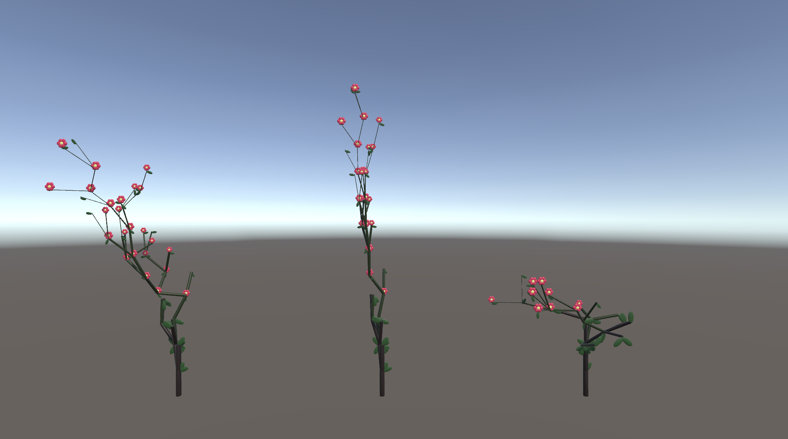

As part of my Master's coursework at Georgia Tech, I took a course on Procedural Content Generation during Fall 2024 with Dr. Greg Turk.
The projects for this course focused on utilizing procedural techniques to generate 3D assets. All projects were created in Unity.
These projects use various techniques such as,
Perlin Noise
Plant Generation Algorithms
Implicit Surfaces
Marching Cubes Algorithm
Random Number Generation
Craig Reynold's Flocking Principles
Project 1: Terrain Generation
Designed and implemented a procedural terrain system featuring a desert-themed landscape.
Generated terrain using multi-band Perlin noise for fractal-like elevation variation.
Created custom desert textures and aligned surface normals to ensure seamless tiling between terrain chunks.
Enabled terrain to extend dynamically based on camera position for an infinite environment effect.
Added first-person camera view and scene objects like cacti, falling rocks, and valleys where rocks can be accumulated.
Project 2: Plant Generation
Developed a variety of procedural plants using the algorithm proposed by de Reffye et al. in
"Plant Models Faithful to Botanical Structure and Development". The generation process relies on random seeds to produce structural variations and simulate natural growth patterns.
Implemented orthotropic (vertical), plagiotropic (horizontal), and directionless growth behavior of plants.
Added tapering to make the branches thinner toward the tips.
Included three hierarchical branching orders for structural complexity.
Integrated flowers and leaves (created in Unity).

Project 3: Creature Generation
Developed a system to generate a variety of creatures using implicit surfaces, rendered through the Marching Cubes algorithm. The creatures exhibit unique shapes, colors, and animations based on random numbers.
Used implicit surfaces such as blobby spheres and lines to define creature geometry.
Added transformations such as tapers and twists to create variations in creature shape and design.
Added simple animations to creature body parts, such as tail movement and antenna spins.
Project 4: Flocking Simulation
This project is a procedural flocking animator, inspired by Craig Reynold's behavioral model.
The simulation combines multiple steering behaviors to produce natural-looking group movement,
with environmental interaction.
Implemented four key forces: flock centering, velocity matching, collision avoidance, and wandering.
Tuned force weights to achieve a balanced and realistic flocking behavior.
Added environmental features such as collisions with obstacles and trail rendering of creatures.